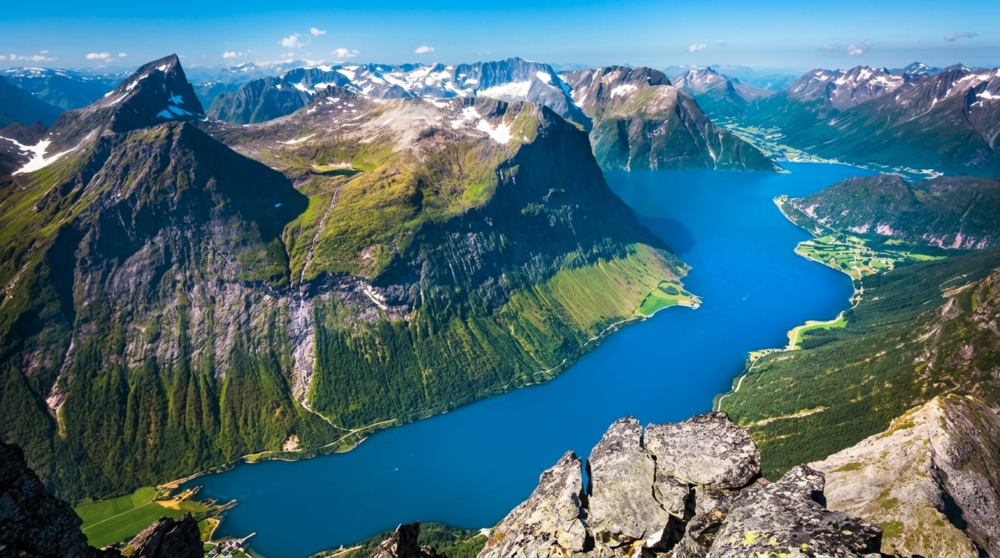
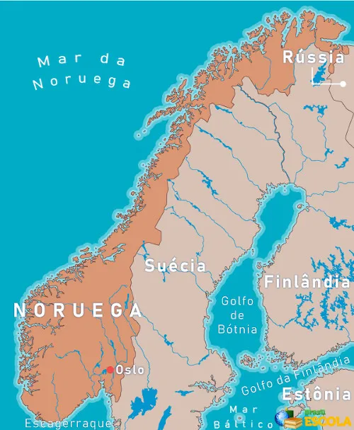
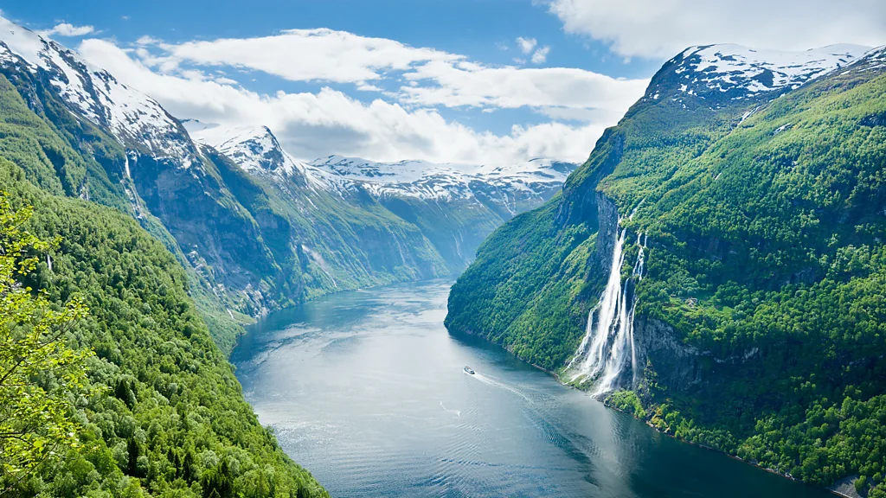
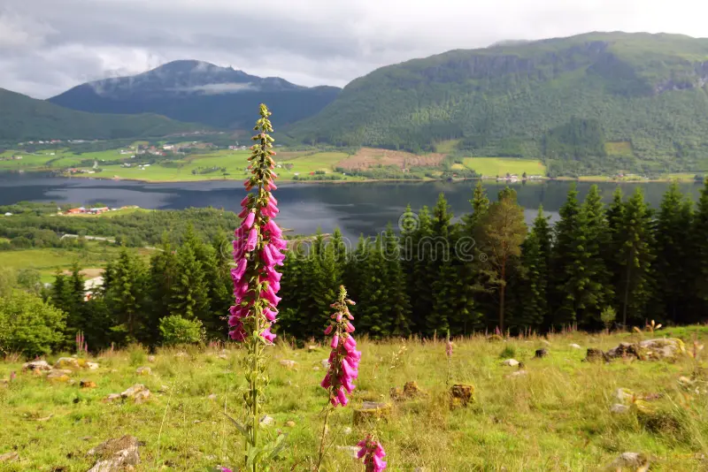
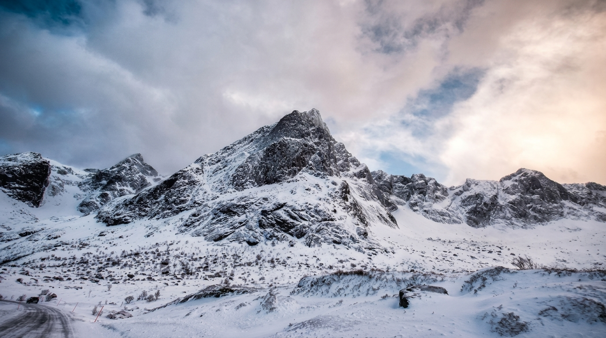

Conhecendo o território norueguês
Localizada no norte da Europa, a Noruega é conhecida por suas paisagens naturais impressionantes. Seu território reúne montanhas, fiordes, geleiras e diferentes características climáticas que tornam sua geografia única.


01. Localização e território
A Noruega está localizada no norte da Europa e ocupa a parte ocidental da Península Escandinava. Faz fronteira com a Suécia, a Finlândia e a Rússia, além de possuir um extenso litoral banhado por mares do Oceano Atlântico Norte.
Seu território também inclui diversas ilhas e arquipélagos, apresentando uma geografia bastante recortada e diversificada.
02. Relevo e fiordes
O relevo norueguês é marcado por montanhas, vales profundos e grandes áreas rochosas. Essas formações naturais influenciam diretamente as paisagens e a distribuição da população.
Um dos elementos mais conhecidos são os fiordes: grandes entradas de mar entre montanhas íngremes, formadas pela ação de antigas geleiras. Eles são considerados algumas das paisagens mais características do país.

03. Clima e vegetação
O clima norueguês varia conforme a localização e a altitude. Enquanto algumas regiões apresentam invernos rigorosos, outras recebem influência marítima, com temperaturas mais moderadas.

Vegetação
A vegetação norueguesa inclui florestas de coníferas, como pinheiros e abetos, além de áreas de tundra nas regiões mais frias e ao norte do país.

Variações climáticas
No inverno, muitas regiões apresentam neve e temperaturas baixas. Já no verão, os dias podem ser muito longos, especialmente nas áreas próximas ao Círculo Polar Ártico.
Uma geografia extraordinária
As características naturais da Noruega influenciam sua cultura, economia e modo de vida. Suas paisagens fazem do país um dos territórios mais marcantes do norte europeu.